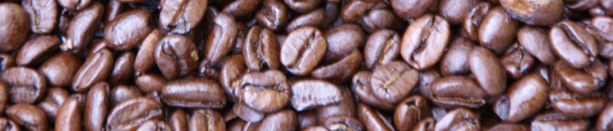

 ALL ABOUT COFFEE
All About Coffee

Coffee preparation is the process of turning coffee beans into a beverage. While the particular steps vary with the type of coffee and with the raw materials, the process includes four basic steps; raw coffee beans must be roasted, the roasted coffee beans must then be ground, the ground coffee must then be mixed with hot water for a certain time (brewed), and finally the liquid coffee must be separated from the used grounds.
Coffee is usually brewed immediately before drinking. In most areas, coffee may be purchased unprocessed, or already roasted, or already roasted and ground. Coffee is often vacuum packed to prevent oxidation and lengthen its shelf life.
To learn more about coffee, just browse our informative site, or you can visit wikipedia for even more.